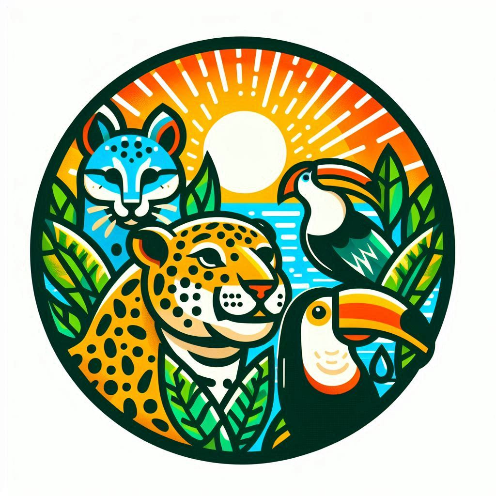
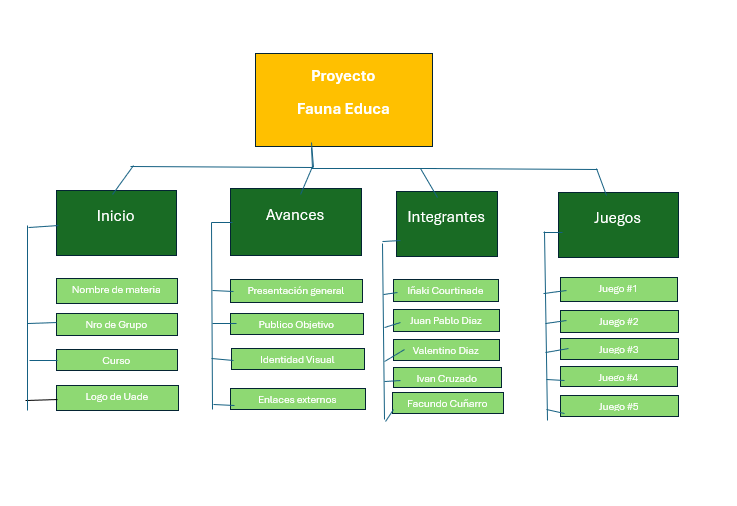

Avances del Proyecto
Quienes somos?
Somos un grupo comprometido de personas apasionadas por la protección y el bienestar de los animales autóctonos. Nuestro objetivo principal es mejorar la calidad de vida de estas especies nativas mediante la educación y la concienciación a través de juegos educativos. Creemos firmemente que la educación es la herramienta más poderosa para generar cambios positivos y sostenibles en nuestra sociedad.
Nuestro proyecto se centra en crear experiencias de aprendizaje interactivas y divertidas que permitan a niños y adultos conocer más sobre las especies nativas, sus hábitats y las amenazas que enfrentan. Al sensibilizar a la comunidad sobre la importancia de conservar nuestra biodiversidad, buscamos inspirar acciones concretas que promuevan un ambiente más saludable y equilibrado para todos los seres vivos.
A través de este proyecto, aspiramos a construir una red de apoyo y colaboración que integre a educadores, conservacionistas, familias y todos aquellos interesados en proteger nuestro patrimonio natural. Juntos, podemos marcar la diferencia y asegurar un futuro mejor para las especies autóctonas y nuestro ecosistema en general.
Nuestro Objetivo
Nuestro objetivo es crear una comunidad inclusiva y diversa, unida por la pasión y el compromiso hacia la protección de nuestra fauna. Invitamos a todos los interesados a unirse a nuestro esfuerzo, aprender más sobre nuestro increíble patrimonio natural y contribuir a un futuro donde los animales autóctonos puedan prosperar.
Logo
Paleta de Colores
#1f2937 y #31AA2F
Nombre del Sitio
Proyecto Fauna Educa
Dominio
Utilizamos el dominio dado por GitHub Pages
Eslogan
"Aprendiendo y protegiendo juntos"
Expectativas de los internautas
Al ingresar al sitio web, los internautas deben sentirse inspirados y motivados para unirse al proyecto. Nuestro objetivo es crear una comunidad inclusiva y diversa, unida por la pasión y el compromiso hacia la protección de nuestra fauna. Invitamos a todos los interesados a unirse a nuestro esfuerzo, aprender más sobre nuestro increíble patrimonio natural y contribuir a un futuro donde los animales autóctonos puedan prosperar.
Somos un grupo comprometido de personas apasionadas por la protección y el bienestar de los animales autóctonos. Nuestro objetivo principal es mejorar la calidad de vida de estas especies nativas mediante la educación y la concienciación a través de juegos educativos. Creemos firmemente que la educación es la herramienta más poderosa para generar cambios positivos y sostenibles en nuestra sociedad.
Nuestro proyecto se centra en crear experiencias de aprendizaje interactivas y divertidas que permitan a niños y adultos conocer más sobre las especies nativas, sus hábitats y las amenazas que enfrentan. Al sensibilizar a la comunidad sobre la importancia de conservar nuestra biodiversidad, buscamos inspirar acciones concretas que promuevan un ambiente más saludable y equilibrado para todos los seres vivos.
A través de este proyecto, aspiramos a construir una red de apoyo y colaboración que integre a educadores, conservacionistas, familias y todos aquellos interesados en proteger nuestro patrimonio natural. Juntos, podemos marcar la diferencia y asegurar un futuro mejor para las especies autóctonas y nuestro ecosistema en general.
Además, los internautas deberían percibir el sitio web como una fuente confiable de recursos y consejos para adoptar conocimientos o hábitos sostenibles en su vida diaria en relación a especies nativas.
Árbol del Sitio
Enlace al Repositorio del Sitio
Enlace al Prototipo del Sitio
Roles de los integrantes
Diseñador UI/UX: Juan Pablo Díaz
Maquetador: Juan Pablo Díaz
Programador: Iñaki Courtinade y Iván Cruzado